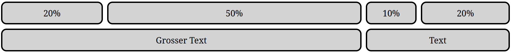
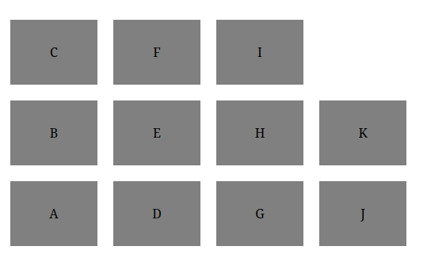

Abschnitt 2
Webseiten gestalten: CSS
Was ist CSS?
CSS (Cascading Style Sheets) ist eine Sprache, die verwendet wird, um das Erscheinungsbild von Webseiten zu gestalten. Sie gibt an, wie die Elemente von HTML aussehen, einschliesslich ihrer Anordnung, Farben und Schriftarten.
CSS spart viel Arbeit. Es kann das Layout mehrerer Webseiten gleichzeitig steuern und verändern. Externe Stylesheets werden in CSS-Dateien gespeichert.
HTML war niemals dazu gedacht, Tags zur Formatierung einer Webseite zu enthalten.
HTML wurde entwickelt, um den Inhalt einer Webseite zu beschreiben, also um Überschriften, Paragraphen etc. festzulegen.
Als Tags wie <font> und Farbattribute zur
HTML-3.2-Spezifikation hinzugefügt wurden, begann ein Albtraum für
Webentwickler. Die Entwicklung grosser Webseiten, bei denen
Schriftarten und Farbinformationen auf jeder einzelnen Seite
hinzugefügt wurden, wurde zu einem langen und teuren Prozess.
Um dieses Problem zu lösen, hat das World Wide Web Consortium (W3C) CSS entwickelt. Damit wurde die Formatierung aus dem HTML-Dokument herausgelöst und von CSS übernommen.
Zusammenspiel von HTML und CSS
Wenn ein Browser ein Stylesheet liest, wird er das HTML-Dokument gemäss den Informationen im Stylesheet formatieren. Es gibt drei Möglichkeiten, um ein Stylesheet einzufügen.
Wir schauen uns nun alle drei Varianten an, um die HTML-Seite von Listing 1 so zu formatieren, wie es die folgende Vorschau zeigt.
- Inline CSS
-
Dabei wird innerhalb eines Eröffnungstags das
style-Attribut verwendet, um den Inhalt des Elements zu formatieren. Diese Variante wird schnell unübersichtlich und sollte vermieden werden.Listing 12. Beispiel von Inline CSS hervorgehoben (firstcss/inline.html) - Internes CSS
-
Dabei wird mit einem
<style>-Tag gearbeitet. Dieses wird innerhalb der HTML-Datei im Header eingefügt. Diese Variante ist etwas besser als Inline CSS. Jedoch ist es am sinnvollsten, die Struktur (HTML) und die Gestaltung (CSS) zu trennen.Listing 13. Beispiel eines internen <style>-Tags hervorgehoben - Externes CSS
-
Um eine saubere Trennung von Struktur (HTML) und Gestaltung (CSS) zu erreichen, können Stylesheets als externe Dateien in Webseiten eingebunden werden. Damit können Styles auch auf mehreren Webseiten angewendet werden und müssen nicht immer wiederholt werden.
Um eine CSS-Datei namens
style.csseinzubinden, fügen wir im «<head>» die in Listing 14 hervorgehobene Zeile hinzu.Die Datei
style.cssist eine Textdatei mit Anweisungen darüber, wie die einzelnen HTML-Elemente dargestellt werden sollen.Listing 14. Externe CSS-Datei einbinden Listing 15. Externe CSS-Datei style.cssWir werden ab sofort immer mit dieser Variante arbeiten.
In der Werkbank
Die Werkbank auf dieser Seite arbeitet genau so: Der Reiter
style.css ist die externe Datei, und das
<link rel="stylesheet" href="style.css"> im
<head> bindet sie ein. Nehmen Sie das
<link>-Tag heraus, wirkt das CSS nicht mehr –
genau wie auf einem echten Webserver.
In Listing 12 wird die Seite mit
Inline CSS gestaltet. Schreiben Sie diese Seite so um, dass die
ganze Gestaltung in einer externen Datei
style.css steht.
-
Erstellen Sie die beiden Dateien und binden Sie das Stylesheet
im
<head>ein. -
Verschieben Sie die beiden
style-Attribute in die CSS-Datei. In der HTML-Datei darf danach keinstyle-Attribut mehr vorkommen. - Der zweite Paragraph soll zusätzlich dunkelrot und fett dargestellt werden. Verwenden Sie dafür eine Klasse.
- Nennen Sie zwei Vorteile von externem CSS gegenüber Inline CSS.
Lösungsvorschlag
Erstens lässt sich dasselbe Stylesheet auf beliebig vielen Seiten einbinden, ohne dass die Regeln wiederholt werden müssen. Zweitens sind Struktur und Gestaltung getrennt, was die HTML-Datei viel lesbarer macht.
Die Grundstruktur von CSS
CSS ist, von der Syntax her, eine sehr einfache Sprache. CSS hat Regeln, die immer auf gleiche Art und Weise aufgebaut sind.
selector {
property: value;
}
Die Teile im Deklarationsblock sind selbsterklärend: mit
property sagt man, welche Eigenschaft man verändern
möchte, mit value wird der Wert für diese Eigenschaft
festgelegt.
Eine grüne Schriftfarbe erreicht man zum Beispiel mit
color: green;.
Wichtig sind dabei die drei Satzzeichen: Nach dem Selektor folgt eine geschweifte Klammer, zwischen Property und Wert steht ein Doppelpunkt, und jede Deklaration wird mit einem Strichpunkt abgeschlossen. Fehlt eines davon, so ignoriert der Browser die Regel stillschweigend.
Die Liste an möglichen Properties ist lang und wir werden nur einen Bruchteil davon nutzen. Eine Liste von möglichen Properties finden Sie hier:
Die CSS-Datei von Listing 17 enthält vier Syntaxfehler. Finden Sie
die Fehler und korrigieren Sie sie. Der fehlerhafte Code steht im
Reiter style.css der Werkbank.
h1
color: blue
}
.wichtig {
color = red;
}
#titel {
font-size: 2rem
Lösungsvorschlag
-
Nach dem Selektor
h1fehlt die öffnende geschweifte Klammer. -
Nach
color: bluefehlt der Strichpunkt. -
In der Klasse
.wichtigsteht ein Gleichheitszeichen anstelle eines Doppelpunkts. - Bei der letzten Regel fehlen der Strichpunkt und die schliessende geschweifte Klammer.
CSS-Selektoren
Mit dem selector kann man angeben, für welche Elemente die
Eigenschaften (property: value;) gelten sollen. Wir haben
bereits in Listing 15 gesehen, wie dies für die Tags
(<body> und <h1>) allgemein
funktioniert. Neben dem Tag-Namen gibt es aber noch viele andere
Möglichkeiten, Elemente auszuwählen.
Wir behandeln hier bei Weitem nicht alle Möglichkeiten, die CSS bietet. Eine vollständigere Liste an möglichen Selektoren finden Sie hier:
CSS-Klassen
Klassen werden in CSS vermutlich am häufigsten verwendet. Dazu wird in HTML eine Klasse als Attribut gesetzt, wie zum Beispiel:
<p class="myclass">Sehr wichtig</p>
In CSS gibt uns das die Möglichkeit, Stile für alle mit
myclass versehenen Tags anzugeben.
Um in CSS zu sagen, dass es sich um eine Klasse handelt, müssen Sie einfach einen Punkt vor den Klassennamen schreiben.
.myclass {
border: 5px solid orange;
}
CSS-IDs
Es können nicht nur Klassen, sondern auch IDs verwendet werden. Dies wird oftmals gemacht, wenn es sich um ein eindeutiges Element handelt, wie zum Beispiel eine Navigationsliste.
Ähnlich wie bei Klassen muss auch hier nur ein spezielles Zeichen vor
den Namen gestellt werden. Bei IDs wird das
#-Zeichen verwendet.
#myid {
background-color: gray;
}
Erstellen Sie eine CSS-Regel, die allen Tags mit dem
Klassen-Attribut important eine rote Schriftfarbe
zuweist.
Lösungsvorschlag
Geben Sie einem Element auf Ihrer Webseite von Übung 3.03 eine ID, und erstellen Sie eine Regel für dieses Element.
Lösungsvorschlag
Attribute als Selektor
Eine weitere Möglichkeit besteht darin, ein Attribut als Selektor zu verwenden. Das heisst, dass alle Elemente, die ein bestimmtes Attribut aufweisen, entsprechend dargestellt werden sollen.
Um dies zu erreichen, muss in der CSS-Regel das entsprechende Attribut in eckigen Klammern geschrieben werden.
<button>-Tags mit und ohne
disabled-Attribut
Mit dem Attribut target="_blank" wird ein Link in
einem neuen Tab geöffnet. Für die Besucher einer Webseite ist es
angenehm, wenn solche Links vorher als solche erkennbar sind.
Erstellen Sie eine CSS-Regel, die alle Links mit diesem Attribut fett darstellt.
Hinweis: Mit
a[target="_blank"]::after und der Property
content können Sie zusätzlich noch ein Zeichen
hinter den Link einfügen.
Lösungsvorschlag
Pseudo-Klassen
In CSS gibt es bestimmte bereits vordefinierte Pseudo-Klassen. Diese können zum Beispiel ein Element auswählen, das sich zurzeit gerade unter dem Mauszeiger befindet.
Um einen Link besser hervorzuheben, können Sie die Schriftgrösse anpassen, wenn der Mauszeiger über dem Link ist.
a:hover {
font-size: 1.4rem;
}
Sie können das «:hover» zu jedem beliebigen Selektor
hinzufügen.
Im Zusammenhang mit :hover empfiehlt es sich oft, gleich
auch noch :focus hinzuzufügen.
a:hover, a:focus {
font-size: 1.4rem;
}
:hover und :focus
So erreichen Sie den gleichen Effekt auch für Personen, die den Browser mit der Tastatur bedienen.
Pseudo-Klassen beginnen jeweils mit einem :, wie zum
Beispiel :visited.
Selektoren kombinieren
Manchmal ist es praktisch, verschiedene Selektoren miteinander zu kombinieren. Dazu gibt es mehrere Möglichkeiten. Hier ist ein Beispiel des sogenannten «Descendant Selectors»:
Diese Regel führt dazu, dass alle <li>-Elemente
innerhalb einer ungeordneten Liste ohne Serifen dargestellt werden. Die
Regel wird aber nicht auf <li>-Elemente in einer
geordneten Liste angewandt.
Erstellen Sie eine Webseite mit zwei Knöpfen
(<button>), die beide die Klasse
knopf haben.
- Gestalten Sie die Knöpfe mit einem grünen Rand, grüner Schrift und weissem Hintergrund.
- Befindet sich der Mauszeiger über einem Knopf, sollen Hintergrund- und Schriftfarbe getauscht werden.
-
Erreichen Sie denselben Effekt auch für Personen, die die Seite
mit der Tabulatortaste bedienen. Probieren Sie es aus, indem Sie
in der Vorschau mit
Tabdurch die Knöpfe gehen.
Lösungsvorschlag
Die dritte Teilaufgabe wird mit :focus gelöst.
Diese Pseudo-Klasse trifft auf das Element zu, das gerade den
Tastaturfokus hat.
Normalerweise sind Links, die Sie bereits besucht haben, einfach
violett. Versuchen Sie mit der Pseudo-Klasse
:visited einen Link zu verstecken.
Hinweis: Aus Datenschutzgründen behandeln Browser
:visited speziell: Es wirken nur Farb-Properties,
und in der Vorschau dieser Seite zählt kein Link als besucht.
Testen Sie diese Übung darum mit den heruntergeladenen Dateien
in einem echten Browserfenster.
Lösungsvorschlag
Recherchieren Sie und erklären Sie den Unterschied zwischen den CSS-Regeln von Listing 26 und Listing 27.
div>h2 {
font-size: xx-large;
}
div h2 {
font-size: xx-large;
}
Erstellen Sie eine HTML-Seite, bei der die beiden Regeln unterschiedliche Ergebnisse liefern.
Lösungsvorschlag
Die Regel von Listing 26 wird nur auf
<h2>-Tags angewendet, die
direkt in einem
<div>-Element liegen.
Die Regel von Listing 27 wird auf alle
<h2>-Tags angewendet, die innerhalb eines
<div>-Elements (oder in einer tieferen
Ebene) liegen.
Spielen Sie das Spiel «CSS Diner», um Ihre Kenntnisse über CSS-Selektoren zu vertiefen.
Das CSS-Box-Modell
Das Box-Modell in CSS beschreibt, welchen Platz die Elemente auf einer Webseite einnehmen. Alle Elemente werden in vier Bereiche eingeteilt.
margin- Der äussere Rand, also der Abstand zu anderen Elementen.
border- Der Rand eines Elements. Dieser ist normalerweise nicht sichtbar, kann aber verwendet werden, um Elemente zu umranden.
padding-
Der innere Rand, also der Abstand vom Inhalt zum
border. content-
Der Inhalt des Elements. Dessen Grösse wird normalerweise mit
widthundheightangegeben.
Damit das Box-Modell möglichst einfach angewendet werden kann, sollten Sie immer die CSS-Regel von Listing 28 einfügen.

Diese Regel bewirkt, dass width und
height die gesamte Breite beziehungsweise Höhe
des Elements angeben, also inklusive padding und
border. Ohne diese Regel bezeichnet
width nur die Breite des Inhalts, und der innere Rand
sowie der Rand kommen noch dazu.
Es ist auch möglich, einzelne Randteile separat anzusprechen. So können
Sie zum Beispiel die einzelnen Teile des margins mit den
folgenden Properties ansprechen: margin-left,
margin-right, margin-top und
margin-bottom.
Erstellen Sie ein Element mit der ID box. Spielen Sie
dann mit dem CSS-Code von Listing 29 herum, bis Sie verstehen, was
die einzelnen Teile tun.
Betrachten Sie die CSS-Regel von Listing 29.
-
Wie breit erscheint das Element auf dem Bildschirm, wenn die
Regel
box-sizing: border-box;gesetzt ist? - Wie breit erscheint es, wenn die Regel nicht gesetzt ist?
-
Wie viel Platz braucht das Element in der zweiten Situation
insgesamt, wenn der
marginmitgezählt wird?
Lösungsvorschlag
-
Mit
border-boxgibtwidthbereits die ganze Breite an, das Element ist also 300 Pixel breit. Für den Inhalt bleiben davon 300 − 2·10 − 2·2 = 276 Pixel. -
Ohne die Regel gilt
widthnur für den Inhalt. Dazu kommen links und rechts je 10 Pixelpaddingund je 2 Pixelborder, also 300 + 2·10 + 2·2 = 324 Pixel. -
Der
marginvon 50 Pixeln kommt auf beiden Seiten dazu: 324 + 2·50 = 424 Pixel.
Mit border-left können Sie nur den linken Rand
ansprechen. Erstellen Sie eine Klasse danger, die auf
der linken Seite einen roten Rand von 5 Pixeln hat.
Lösungsvorschlag
CSS-Animationen
Moderne Webseiten sind voll von Animationen. Viele davon lassen sich
leicht mit CSS erstellen. Die einfachste Art einer Animation ist ein
Übergang (transition). Damit können Effekte, die mit
:hover (oder anderen Pseudo-Klassen) erzeugt werden,
angenehmer gestaltet werden.
Beispiel
Für eine transition werden zwei Regeln benötigt. Die erste
ist jeweils für die Klasse und gibt das Timing der
transition an. Die zweite Regel gibt den Stil für das
Element an, wenn zum Beispiel der Mauszeiger auf dem Element ist.
Beispiel
Sie können ein pulsierendes Element einfach erstellen, indem Sie ein
Element vergrössern und wieder verkleinern. Der Code von Listing 31
lässt alle Elemente der Klasse myclass pulsieren.
Erstellen Sie eine transition, die ein Element um 90
Grad rotieren lässt.
Hinweise:
-
Eine Rotation können Sie mit
«
transform: rotate(90deg);» erreichen. - Verwenden Sie «
position: absolute;».
Lösungsvorschlag
Erstellen Sie eine Webseite, auf der zuerst der Text «Gymnasium Muttenz» in blauer Farbe steht. Nach 3 Sekunden soll der Text langsam um 400 Pixel nach rechts verschoben werden und gleichzeitig soll die Farbe von Blau zu Rot wechseln. Die Bewegung soll 5 Sekunden (insgesamt also 8 Sekunden) lang dauern.
Lösungsvorschlag
Arbeiten Sie das Tutorial zu CSS-Animationen durch.
Mit Bildern umgehen
Bilder werden in HTML wie Text behandelt oder, genauer gesagt, wie Inlineelemente. Sie werden einfach in den Textfluss eingebaut und die Zeile danach wird nicht umgebrochen. Möchten Sie also ein Bild alleine und zentriert haben, müssen Sie es in einen eigenen Container packen und diesen dann gestalten.
Beispiele
-
Um ein einzelnes Bild zu zentrieren, können Sie die Vorlage von Listing 32 nutzen.
Listing 32. HTML-Vorlage zum Zentrieren eines Bildes Listing 33. CSS-Code zum Zentrieren eines Bildes Der CSS-Code von Listing 33 liefert uns dann das entsprechende Design. Dafür braucht es 2 Regeln, eine für den Container und eine für die Breite des Bildes selbst.
Die zweite CSS-Regel wird hier nicht unbedingt benötigt. Es kann aber praktisch sein, wenn Bilder nicht ganz so breit wie der Text sein sollen.
-
Bilderecken können auch abgerundet werden. Dadurch können spannende Bildformen erreicht werden. Mit dem folgenden Code können Sie die Ecken von einem Bild abrunden.
Die Intensität der Abrundung kann durch die Property
border-radiuseingestellt werden. Um sich damit vertraut zu machen, ist es sinnvoll, hier mit diversen Werten zu experimentieren.Listing 34. Ecken von Bildern abrunden
- Erstellen Sie eine Webseite mit drei verschiedenen Bildern, die alle zentriert dargestellt werden. Nutzen Sie dazu die Methode aus «Mit Bildern umgehen».
-
Runden Sie die Ecken der Bilder ab. Spielen Sie dabei etwas mit
dem Wert der Property
border-radiusherum. Probieren Sie auch die Werte 2 % oder 50 %. - Jedes zentrierte Bild soll nun auch noch einen schwarzen Rahmen bekommen.
-
Ergänzen Sie Ihren CSS-Code mit einer
transition, so dass der Abrundungseffekt langsam aufgehoben wird, wenn man mit dem Mauszeiger über dem Bild ist.
Lösungsvorschlag
Hintergrundbilder setzen
Die CSS-Regeln im Zusammenhang mit background erlauben es,
den Hintergrund von HTML-Elementen zu konfigurieren. Insbesondere
lassen sich damit auch Hintergrundbilder setzen.
Erstellen Sie eine Webseite mit drei Blöcken, die jeweils als Hintergrundbild ein Smiley enthalten.
Wenn sich der Mauszeiger über einem Smiley befindet, soll dieses zu einem zwinkernden Smiley werden.
Lösungsvorschlag
Beachten Sie: Die Datei smiley.html bindet das
Stylesheet unter dem Namen smiley.css ein. In der
Werkbank heisst die CSS-Datei immer
style.css.
Das Grid-Layout
Beim Erstellen einer Webseite kommt es immer mal wieder vor, dass man zwei Teile (Container) nebeneinander platzieren möchte. Eine Möglichkeit, dies zu bewerkstelligen, ist das sogenannte Grid-Layout.
Als Beispiel möchten wir einen Text neben einem Bild platzieren.
Es können auch mehrere Spalten eingefügt werden. Diese müssen nur mit
der gewünschten Breite bei
grid-template-columns eingefügt werden.
Gegeben ist der folgende HTML-Code:
Ergänzen Sie diesen Code mit einer CSS-Datei, so dass das Resultat wie im folgenden Bild aussieht. Nutzen Sie das Grid-Layout.

Lösungsvorschlag
Beachten Sie: Die HTML-Datei bindet das Stylesheet unter dem
Namen grid-exercise.css ein. In der Werkbank
heisst die CSS-Datei immer style.css.
Geben Sie für die folgenden Layouts jeweils den Wert von
grid-template-columns an.
- Drei Spalten, die alle genau gleich breit sind.
- Eine Spalte von 200 Pixeln links, danach eine Spalte, die den restlichen Platz einnimmt.
- Vier Spalten, wobei die erste und die letzte halb so breit sind wie die beiden in der Mitte.
Hinweis: Die Einheit fr gibt einen Anteil
am verfügbaren Platz an.
Lösungsvorschlag
-
grid-template-columns: 1fr 1fr 1fr;Kürzer geht es mit
repeat(3, 1fr). -
grid-template-columns: 200px auto;Anstelle von
autokann auch1frverwendet werden. grid-template-columns: 1fr 2fr 2fr 1fr;
Spielen Sie das Spiel «Grid Garden» durch.
Das Flexbox-Modell
Oft möchte man mehrere Elemente in Zeilen oder Spalten angeordnet haben, die alle gleich breit sind und deren Abstände sich automatisch anpassen. Solche einfachen Layouts sind dank des Flexbox-Modells einfach zu realisieren.
Beispiele
-
Listing 39. Beispiel zu Flexbox (HTML) Listing 40. Beispiel zu Flexbox (CSS) Beispiel zu Flexbox -
Eine typische Anwendung für Flexbox ist eine Navigationsleiste.
Listing 41. Navigationsleiste (HTML) Listing 42. Navigationsleiste (CSS) Die Navigationsleiste im Browser
In Übung 3.36 werden Sie diesen Code noch erweitern, so dass die Navigationslinks anders dargestellt werden.
Passen Sie das Beispiel von Listing 40 so an, dass die Elemente nach Spalten von unten nach oben angeordnet werden, wie im folgenden Bild.

Hinweis: Sie brauchen dafür die Property
flex-direction.
Lösungsvorschlag
Spielen Sie das Spiel «Flexbox Froggy» durch.